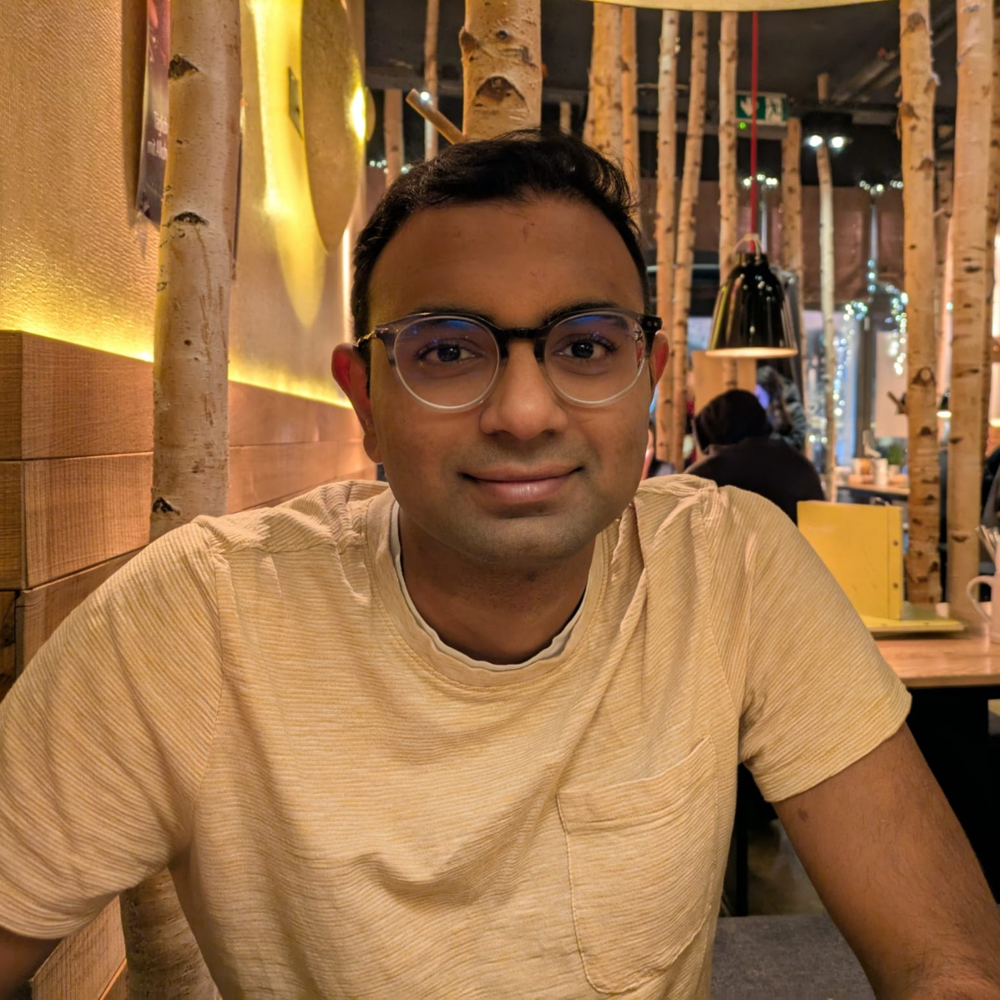

|
Tarun Yenamandra
|
|
PhD candidate at TU Munich (advised by Prof. Daniel Cremers), specializing in the intersection of Generative AI and 3D/4D Computer Vision. My research bridges 3D geometry with conditional generation — from implicit morphable models and single-pass SDF rendering to learning-free sparse-view reconstruction. Previously Research Scientist Intern at Meta Reality Labs Research (diffusion-based scene editing, dynamic 3DGS).
tarun738 at gmail dot com /
Scholar /
LinkedIn /
GitHub
|

|
News
- Jun 2026 — VisDom preprint on arXiv
- Jul–Dec 2025 — Research Scientist Intern at Meta Reality Labs Research (work in submission)
|
Selected Papers
My interests are at the intersection of generative AI and 3D/4D computer vision — specifically conditional generation with multi-view consistency, neural scene representations (NeRF, 3DGS), and sparse-view reconstruction. Full list on Google Scholar.
|
|
|
VisDom: Sparse Novel View Synthesis with Visible Domain Constraint
Mariia Gladkova*, Tarun Yenamandra*, Edmond Boyer, Robert Maier, Tony Tung, Daniel Cremers
arXiv, 2026 (*equal contribution)
A learning-free, plug-and-play visible domain constraint for sparse novel view synthesis that eliminates geometric ambiguity from limited viewpoints.
webpage /
arXiv /
code
|
|
|
FIRe: Fast Inverse Rendering using Directional and Signed Distance Functions
Tarun Yenamandra, Ayush Tewari, Nan Yang, Florian Bernard, Christian Theobalt, Daniel Cremers
WACV, 2024
Directional and signed-distance function based renderer that enables fast inverse rendering.
webpage /
arXiv /
code
|
|
|
i3DMM: Deep Implicit 3D Morphable Model of Human Heads
Tarun Yenamandra, Ayush Tewari, Florian Bernard, Hans-Peter Seidel, Mohamed Elgharib, Daniel Cremers, Christian Theobalt
CVPR, 2021 (Oral)
Template-free implicit model for full human heads including hairstyle using signed distance fields.
webpage /
arXiv /
code
|
|
|
Convex Optimisation for Inverse Kinematics
Tarun Yenamandra, Florian Bernard, Jiayi Wang, Franziska Mueller, Christian Theobalt
3DV, 2019 (Oral)
Modeling inverse kinematics as a semidefinite program to relax non-convex terms and remove initialization dependence.
arXiv
|
|
{kind=link}